8.深入了解synchronized底层
对象头
Java 中对象在堆中存储都有对象头，以下为 32 位虚拟机的对象头
普通对象-对象头
MarkWord 存储hashcode，垃圾回收以及锁的信息
KlassWord 指向类信息引用，指向方法区（放类信息）
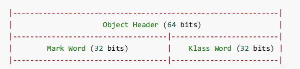
数组对象-对象头
对比普通对象多了数组长度的字段
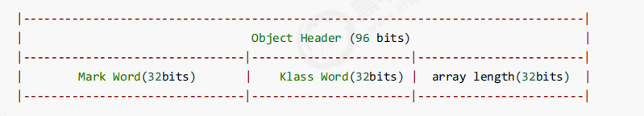
MarkWord的结构
32位的如下
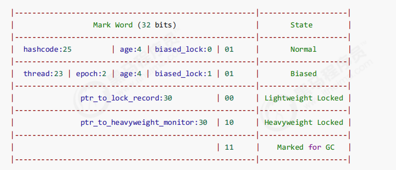
64位的如下
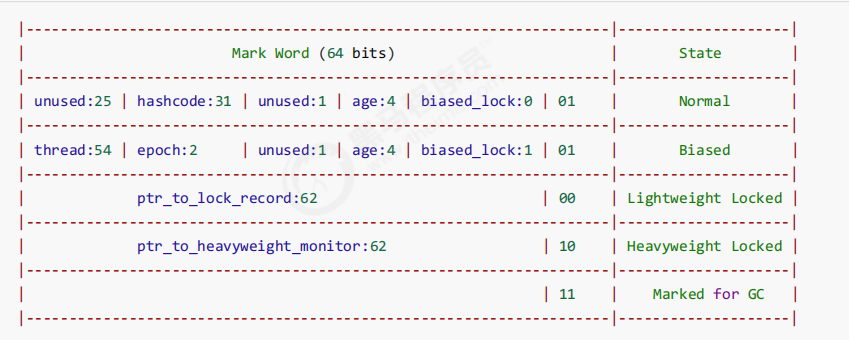
Synchronized 重量级锁原理
首先每一个对象都可以关联一个 Monitor，重量级锁使用对象头指向 Monitor （由操作系统提供）。
这个 Monitor 会有一个 Owner 作为指向锁拥有者的指针，同时有等待队列 EntryList 记录阻塞等待的线程
唤醒是非公平的，取决于JDK实现。
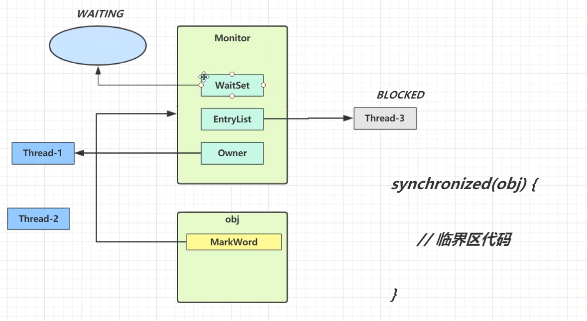
字节码层面
- 字节码层面会考虑抛出异常，最终一定会释放锁
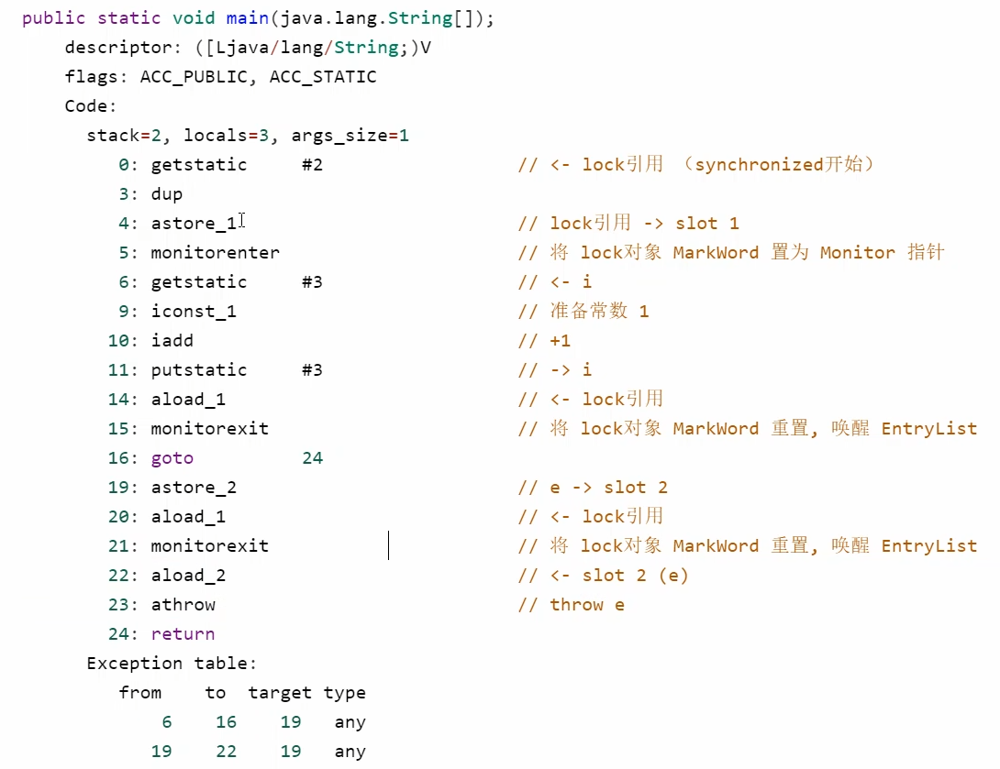
轻量级锁
使用场景：虽然多线程，但是访问的时间错开（没有竞争）
- 创建锁记录对象，每个线程的栈帧都有一个锁记录的结构，内部可以存储锁定对象的 MarkWord
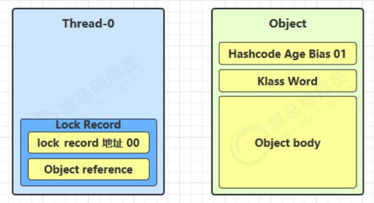
- 上锁过程：锁记录的 Object Reference 指向锁对象，尝试使用 CAS 替换 MarkWord，存储在锁记录里面
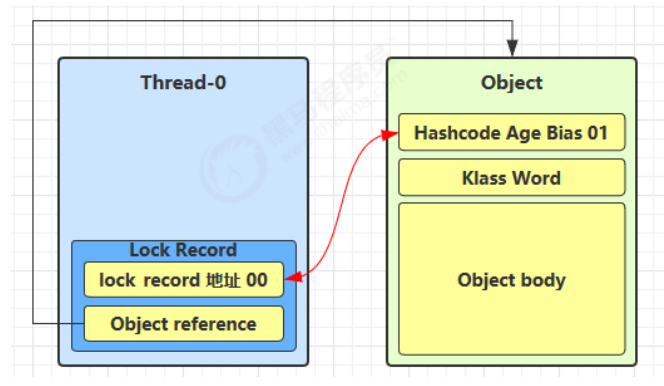
- 如果CAS成功，则代表上了轻量级锁成功
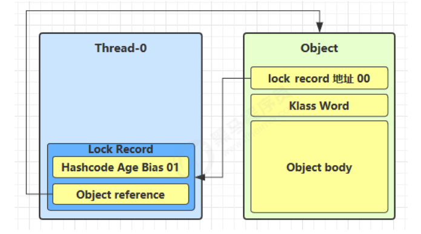
如果 CAS 失败，两种情况
其他线程持有轻量级锁，表明有竞争，需要进行锁膨胀
自己重入，则添加 Lock Record 作为重入的计数
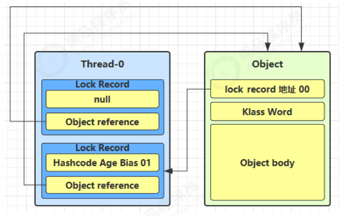
退出 synchronized 如果有取值为 Null 的锁记录，表示有重入，重置锁记录，表示重入数减一
退出 synchronized 锁记录不为 Null，尝试 CAS 将 MarkWord 值恢复给对象头
成功，解锁
失败，已经进行锁膨胀，进入解锁重量级锁的流程
锁膨胀
CAS尝试加锁（轻量级锁加锁）如果失败，代表可能已经被上了轻量级锁，需要进行锁膨胀
- 如下，已经被 thread-0 占有轻量级锁，thread-1 尝试加轻量级锁，则会失败
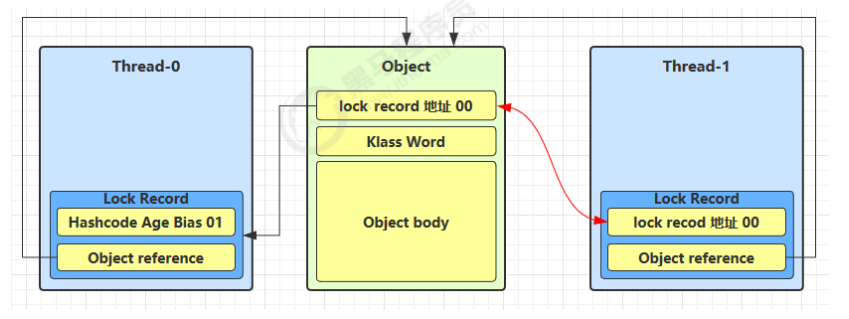
CAS失败后，进行锁膨胀
为 Object 对象申请 Monitor，让 Object 指向重量级锁地址
然后自己进入 Monitor 的 EntryList 并且阻塞
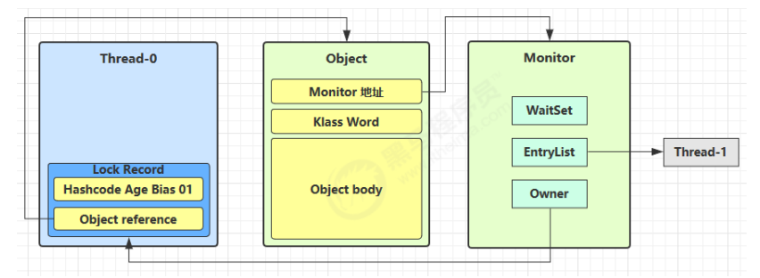
- Thread-0 退出同步代码块后，CAS会失败。进入重量级锁解锁流程，按照 Monitor 地址找到 Monitor 对象，设置 Owner 为 null，唤醒 EntryList 的线程
自旋优化
重量级锁竞争的时候，可以进行自旋获取，如果自旋成功（这时候占有的线程退出了同步代码块）就可以避免阻塞。
这里也体现了锁的不公平。
单核CPU这样没有意义，单纯浪费CPU
Java6以后是自适应的，Java7以后不可控
偏向锁
轻量级锁问题：每次重入也需要 CAS 操作同时也产生了锁记录（值为Null）。
偏向锁：只有第一次需要 CAS 将线程 ID 设置到对象的 MarkWord 头，后面重入如果发现是自己的线程ID就代表无竞争，不用重新 CAS。避免了一直生成锁记录，避免了CAS。
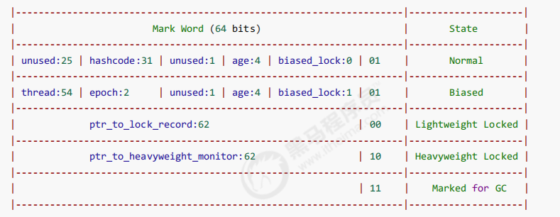
开启了偏向锁，后三位为101，前面的thread，epoch，age都为0
偏向锁默认延迟几秒，可以添加 VM 参数禁止延迟
如果没有用到偏向锁，后三位为001，这时候 hashcode 和 age 都为0，第一次用到 hashcode 才会赋值
撤销-调用hashcode
如果调用了 hashcode 则会撤销偏向锁，因为 MarkWord
无法存储线程ID了
轻量级锁在锁记录放着 hashcode
重量级锁在 Monitor 字段记录 hashcode
撤销-其他线程使用对象
当有其他线程使用偏向锁对象，会进行锁升级为轻量级锁
撤销-调用了 wait/notify
批量重偏向
如果对象虽然被多个线程访问，但没有竞争，这时偏向了线程 T1 的对象仍有机会重新偏向 T2，重偏向会重置对象的 Thread ID
当撤销偏向锁阈值超过 20 次后，jvm 会这样觉得，我是不是偏向错了呢，于是会在给这些对象加锁时重新偏向至加锁线程（正常是锁升级，但是撤销太多次了于是改偏向）
批量撤销
当撤销偏向锁阈值超过 40 次后，jvm 会这样觉得，自己确实偏向错了，根本就不该偏向。于是整个类的所有对象都会变为不可偏向的，新建的对象也是不可偏向的
锁消除
JIT 会在编译的时候发现某些 synchronized 没必要，于是不加锁